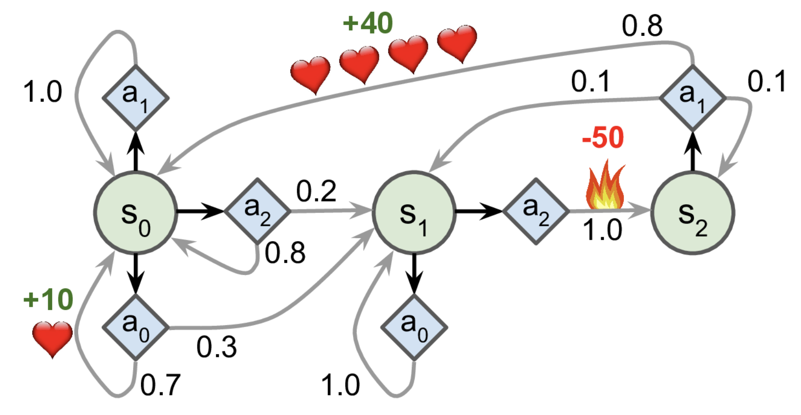

Bandits
Contents
Run following command to install deps:
pip install keras-rl2 gym
If you are interested dig deeper:
Read what deepmind is doing.
Read what openAI is doing.
Work through Deep RL, which contains more examples and intuitive lower level implementations. This medium series is great.
Read book “Deep Reinforcement Learning Hands-On” by Maxim Laptan.
import gym
import numpy as np
import pandas as pd
from tensorflow.keras.models import Sequential
from tensorflow.keras.layers import Dense, Activation, Flatten
from tensorflow.keras.optimizers import Adam
from scipy.stats import beta
from rl.agents.dqn import DQNAgent
from rl.policy import EpsGreedyQPolicy
from rl.memory import SequentialMemory
import matplotlib.pyplot as plt
Bandits#
First we need an experiment, for example let’s set up 3 arm bandit so that first hand gives highest reward.
BANDITS = [0.7, 0.2, 0.3] # arm 1 wins with prob of 50%
def pull(i):
return 1 if np.random.rand() < BANDITS[i] else 0
Now we can implement multi-armed bandit algorithm based on bayesian update
pulls = [0 for _ in range(len(BANDITS))] # How much pulls were executed
wins = [0 for _ in range(len(BANDITS))] # Number of wins
n = 20 # Number of pulls to do
for _ in range(n):
priors = [beta(1 + w, 1 + p - w) for p, w in zip(pulls, wins)]
# Choose a 'best' bandit based on probabilities
chosen_arm = np.argmax([p.rvs(1) for p in priors])
# Pull and record to output
reward = pull(chosen_arm)
pulls[chosen_arm] += 1
wins[chosen_arm] += reward
print('Total pulls', pulls)
print('Total wins ', wins)
Total pulls [17, 1, 2]
Total wins [14, 0, 0]
df = pd.DataFrame(index=np.linspace(0, 1, 101))
for i, p in enumerate(priors):
df[f'arm_{i}'] = p.pdf(df.index)
df.plot()
plt.show()
TASK: rerun with higher number of experiments. Do the distributions look better then?
Usually only to exploit the system is not a good idea and epsilon-greedy can help to balance out explore/exploit.
Idea of epsilon-greedy is simple:
if random_number < epsilon:
# choose arm to pull randomly
else:
# choose optimal arm based on pulls and wins
TASK: implement epsilon-greedy and run some experiments with different epsilon values. Try to reson when epsilon-greedy might be a better choice.
Q-Learning#
Q-learning is a model-free RL algorithm to learn quality of actions telling an agent what action to take under what circumstances. Idea is simple - we will store values in state/action table and use it as a reference for making actions.
Let’s start by looking at markov decision process based game:
This can be represented with transition weights as follows:
transition_probabilities = [ # shape=[s, a, s']
[[0.7, 0.3, 0.0], [1.0, 0.0, 0.0], [0.8, 0.2, 0.0]],
[[0.0, 1.0, 0.0], None, [0.0, 0.0, 1.0]],
[None, [0.8, 0.1, 0.1], None]]
rewards = [ # shape=[s, a, s']
[[+10, 0, 0], [0, 0, 0], [0, 0, 0]],
[[0, 0, 0], [0, 0, 0], [0, 0, -50]],
[[0, 0, 0], [+40, 0, 0], [0, 0, 0]]]
possible_actions = [[0, 1, 2], [0, 2], [1]]
Now we will try to run through iterative optimization process
Q_values = np.full((3, 3), -np.inf) # -np.inf for impossible actions
for state, actions in enumerate(possible_actions):
Q_values[state, actions] = 0.0 # for all possible actions
gamma = 0.90 # the discount factor
for iteration in range(50):
Q_prev = Q_values.copy()
for s in range(3):
for a in possible_actions[s]:
Q_values[s, a] = np.sum([
transition_probabilities[s][a][sp]
* (rewards[s][a][sp] + gamma * np.max(Q_prev[sp]))
for sp in range(3)])
Q_values
array([[18.91891892, 17.02702702, 13.62162162],
[ 0. , -inf, -4.87971488],
[ -inf, 50.13365013, -inf]])
The idea of using discounted rewards in Q-states is one of the fundamental ideas in RL. For sure we don’t know initial probabilities and rewards, but as we will see we can learn them.
Cartpole and DQN#
Get the environment and extract the number of actions.
We will try to balance a stick - CartPole

To meet provide this challenge we are going to utilize the OpenAI gym, a collection of reinforcement learning environments.
Observations — The agent needs to know where pole currently is, and the angle at which it is balancing.
Delayed reward — Keeping the pole in the air as long as possible means moving in ways that will be advantageous for both the present and the future.
env = gym.make('CartPole-v0')
nb_actions = env.action_space.n
print('Number of actions', nb_actions)
Number of actions 2
Let’s build a simple NN model.
model = Sequential()
model.add(Flatten(input_shape=(1, 4)))
model.add(Dense(16, activation='relu'))
model.add(Dense(16, activation='relu'))
model.add(Dense(16, activation='relu'))
model.add(Dense(nb_actions))
model.summary()
Model: "sequential"
_________________________________________________________________
Layer (type) Output Shape Param #
=================================================================
flatten (Flatten) (None, 4) 0
_________________________________________________________________
dense (Dense) (None, 16) 80
_________________________________________________________________
dense_1 (Dense) (None, 16) 272
_________________________________________________________________
dense_2 (Dense) (None, 16) 272
_________________________________________________________________
dense_3 (Dense) (None, 2) 34
=================================================================
Total params: 658
Trainable params: 658
Non-trainable params: 0
_________________________________________________________________
Finally, we configure and compile our agent. We will use Epsilon Greedy:
All actions initially are tried with non-zero probability
With probability \(1-\epsilon\) choose the greedy action
With probability \(\epsilon\) choose an action ar random
and we will estimate target Q-Value using reward and the future discounted value estimate
policy = EpsGreedyQPolicy()
memory = SequentialMemory(limit=50000, window_length=1)
dqn = DQNAgent(model=model, nb_actions=nb_actions,
memory=memory, nb_steps_warmup=10,
target_model_update=1e-2, policy=policy)
dqn.compile(Adam(lr=1e-3), metrics=['mae'])
Let’s see how it looks like before training. Note, that pole does not have to fall fully for gym to note it as a failed play.
dqn.test(env, nb_episodes=5, visualize=True)
Testing for 5 episodes ...
WARNING:tensorflow:From /Users/trokas/.local/share/virtualenvs/current-rcFo7dEP/lib/python3.7/site-packages/tensorflow/python/keras/engine/training_v1.py:2070: Model.state_updates (from tensorflow.python.keras.engine.training) is deprecated and will be removed in a future version.
Instructions for updating:
This property should not be used in TensorFlow 2.0, as updates are applied automatically.
Episode 1: reward: 9.000, steps: 9
Episode 2: reward: 10.000, steps: 10
Episode 3: reward: 8.000, steps: 8
Episode 4: reward: 9.000, steps: 9
Episode 5: reward: 9.000, steps: 9
<tensorflow.python.keras.callbacks.History at 0x14bf72d90>
from pyglet.gl import *
Okay, now it’s time to learn something! You can visualize the training by setting visualize=True, but this
slows down training quite a lot.
dqn.fit(env, nb_steps=5000, visualize=False, verbose=2)
Training for 5000 steps ...
/Users/trokas/.local/share/virtualenvs/current-rcFo7dEP/lib/python3.7/site-packages/rl/memory.py:40: UserWarning: Not enough entries to sample without replacement. Consider increasing your warm-up phase to avoid oversampling!
warnings.warn('Not enough entries to sample without replacement. Consider increasing your warm-up phase to avoid oversampling!')
12/5000: episode: 1, duration: 0.519s, episode steps: 12, steps per second: 23, episode reward: 12.000, mean reward: 1.000 [ 1.000, 1.000], mean action: 0.917 [0.000, 1.000], loss: 0.470474, mae: 0.588689, mean_q: -0.165078
22/5000: episode: 2, duration: 0.061s, episode steps: 10, steps per second: 164, episode reward: 10.000, mean reward: 1.000 [ 1.000, 1.000], mean action: 1.000 [1.000, 1.000], loss: 0.430313, mae: 0.540784, mean_q: -0.092450
31/5000: episode: 3, duration: 0.070s, episode steps: 9, steps per second: 129, episode reward: 9.000, mean reward: 1.000 [ 1.000, 1.000], mean action: 1.000 [1.000, 1.000], loss: 0.335967, mae: 0.472474, mean_q: 0.008541
/Users/trokas/.local/share/virtualenvs/current-rcFo7dEP/lib/python3.7/site-packages/rl/memory.py:40: UserWarning: Not enough entries to sample without replacement. Consider increasing your warm-up phase to avoid oversampling!
warnings.warn('Not enough entries to sample without replacement. Consider increasing your warm-up phase to avoid oversampling!')
/Users/trokas/.local/share/virtualenvs/current-rcFo7dEP/lib/python3.7/site-packages/rl/memory.py:40: UserWarning: Not enough entries to sample without replacement. Consider increasing your warm-up phase to avoid oversampling!
warnings.warn('Not enough entries to sample without replacement. Consider increasing your warm-up phase to avoid oversampling!')
41/5000: episode: 4, duration: 0.081s, episode steps: 10, steps per second: 124, episode reward: 10.000, mean reward: 1.000 [ 1.000, 1.000], mean action: 1.000 [1.000, 1.000], loss: 0.275959, mae: 0.449669, mean_q: 0.118187
51/5000: episode: 5, duration: 0.092s, episode steps: 10, steps per second: 108, episode reward: 10.000, mean reward: 1.000 [ 1.000, 1.000], mean action: 1.000 [1.000, 1.000], loss: 0.222271, mae: 0.432547, mean_q: 0.234795
59/5000: episode: 6, duration: 0.051s, episode steps: 8, steps per second: 156, episode reward: 8.000, mean reward: 1.000 [ 1.000, 1.000], mean action: 1.000 [1.000, 1.000], loss: 0.174522, mae: 0.418035, mean_q: 0.355626
69/5000: episode: 7, duration: 0.060s, episode steps: 10, steps per second: 167, episode reward: 10.000, mean reward: 1.000 [ 1.000, 1.000], mean action: 1.000 [1.000, 1.000], loss: 0.141265, mae: 0.404698, mean_q: 0.483447
79/5000: episode: 8, duration: 0.071s, episode steps: 10, steps per second: 141, episode reward: 10.000, mean reward: 1.000 [ 1.000, 1.000], mean action: 0.900 [0.000, 1.000], loss: 0.109955, mae: 0.393378, mean_q: 0.658335
91/5000: episode: 9, duration: 0.079s, episode steps: 12, steps per second: 152, episode reward: 12.000, mean reward: 1.000 [ 1.000, 1.000], mean action: 0.917 [0.000, 1.000], loss: 0.091450, mae: 0.396206, mean_q: 0.877767
100/5000: episode: 10, duration: 0.063s, episode steps: 9, steps per second: 142, episode reward: 9.000, mean reward: 1.000 [ 1.000, 1.000], mean action: 1.000 [1.000, 1.000], loss: 0.071080, mae: 0.367935, mean_q: 1.070451
110/5000: episode: 11, duration: 0.080s, episode steps: 10, steps per second: 125, episode reward: 10.000, mean reward: 1.000 [ 1.000, 1.000], mean action: 1.000 [1.000, 1.000], loss: 0.040656, mae: 0.277581, mean_q: 1.128758
122/5000: episode: 12, duration: 0.068s, episode steps: 12, steps per second: 175, episode reward: 12.000, mean reward: 1.000 [ 1.000, 1.000], mean action: 0.917 [0.000, 1.000], loss: 0.039916, mae: 0.235055, mean_q: 1.220565
133/5000: episode: 13, duration: 0.064s, episode steps: 11, steps per second: 173, episode reward: 11.000, mean reward: 1.000 [ 1.000, 1.000], mean action: 1.000 [1.000, 1.000], loss: 0.037617, mae: 0.185672, mean_q: 1.301775
142/5000: episode: 14, duration: 0.064s, episode steps: 9, steps per second: 140, episode reward: 9.000, mean reward: 1.000 [ 1.000, 1.000], mean action: 1.000 [1.000, 1.000], loss: 0.029914, mae: 0.136788, mean_q: 1.329070
153/5000: episode: 15, duration: 0.074s, episode steps: 11, steps per second: 149, episode reward: 11.000, mean reward: 1.000 [ 1.000, 1.000], mean action: 1.000 [1.000, 1.000], loss: 0.020719, mae: 0.097963, mean_q: 1.405725
162/5000: episode: 16, duration: 0.052s, episode steps: 9, steps per second: 172, episode reward: 9.000, mean reward: 1.000 [ 1.000, 1.000], mean action: 1.000 [1.000, 1.000], loss: 0.028612, mae: 0.103295, mean_q: 1.469801
172/5000: episode: 17, duration: 0.073s, episode steps: 10, steps per second: 137, episode reward: 10.000, mean reward: 1.000 [ 1.000, 1.000], mean action: 1.000 [1.000, 1.000], loss: 0.049274, mae: 0.166730, mean_q: 1.473215
180/5000: episode: 18, duration: 0.047s, episode steps: 8, steps per second: 171, episode reward: 8.000, mean reward: 1.000 [ 1.000, 1.000], mean action: 1.000 [1.000, 1.000], loss: 0.050855, mae: 0.227547, mean_q: 1.582873
191/5000: episode: 19, duration: 0.071s, episode steps: 11, steps per second: 155, episode reward: 11.000, mean reward: 1.000 [ 1.000, 1.000], mean action: 0.909 [0.000, 1.000], loss: 0.036931, mae: 0.293956, mean_q: 1.573139
201/5000: episode: 20, duration: 0.057s, episode steps: 10, steps per second: 176, episode reward: 10.000, mean reward: 1.000 [ 1.000, 1.000], mean action: 0.900 [0.000, 1.000], loss: 0.037119, mae: 0.372745, mean_q: 1.674690
214/5000: episode: 21, duration: 0.086s, episode steps: 13, steps per second: 150, episode reward: 13.000, mean reward: 1.000 [ 1.000, 1.000], mean action: 0.923 [0.000, 1.000], loss: 0.031381, mae: 0.466767, mean_q: 1.717232
224/5000: episode: 22, duration: 0.062s, episode steps: 10, steps per second: 162, episode reward: 10.000, mean reward: 1.000 [ 1.000, 1.000], mean action: 1.000 [1.000, 1.000], loss: 0.026674, mae: 0.542755, mean_q: 1.758591
235/5000: episode: 23, duration: 0.067s, episode steps: 11, steps per second: 164, episode reward: 11.000, mean reward: 1.000 [ 1.000, 1.000], mean action: 1.000 [1.000, 1.000], loss: 0.027041, mae: 0.612402, mean_q: 1.860339
246/5000: episode: 24, duration: 0.063s, episode steps: 11, steps per second: 174, episode reward: 11.000, mean reward: 1.000 [ 1.000, 1.000], mean action: 0.909 [0.000, 1.000], loss: 0.027587, mae: 0.699082, mean_q: 1.904512
256/5000: episode: 25, duration: 0.072s, episode steps: 10, steps per second: 138, episode reward: 10.000, mean reward: 1.000 [ 1.000, 1.000], mean action: 0.900 [0.000, 1.000], loss: 0.029212, mae: 0.805567, mean_q: 1.940700
266/5000: episode: 26, duration: 0.057s, episode steps: 10, steps per second: 174, episode reward: 10.000, mean reward: 1.000 [ 1.000, 1.000], mean action: 0.900 [0.000, 1.000], loss: 0.025534, mae: 0.899284, mean_q: 2.023443
276/5000: episode: 27, duration: 0.056s, episode steps: 10, steps per second: 178, episode reward: 10.000, mean reward: 1.000 [ 1.000, 1.000], mean action: 0.900 [0.000, 1.000], loss: 0.022218, mae: 0.966137, mean_q: 2.042806
286/5000: episode: 28, duration: 0.057s, episode steps: 10, steps per second: 177, episode reward: 10.000, mean reward: 1.000 [ 1.000, 1.000], mean action: 0.800 [0.000, 1.000], loss: 0.021570, mae: 1.044661, mean_q: 2.155052
295/5000: episode: 29, duration: 0.061s, episode steps: 9, steps per second: 147, episode reward: 9.000, mean reward: 1.000 [ 1.000, 1.000], mean action: 0.889 [0.000, 1.000], loss: 0.020520, mae: 1.094059, mean_q: 2.199599
308/5000: episode: 30, duration: 0.077s, episode steps: 13, steps per second: 169, episode reward: 13.000, mean reward: 1.000 [ 1.000, 1.000], mean action: 0.692 [0.000, 1.000], loss: 0.022571, mae: 1.133968, mean_q: 2.243752
317/5000: episode: 31, duration: 0.055s, episode steps: 9, steps per second: 164, episode reward: 9.000, mean reward: 1.000 [ 1.000, 1.000], mean action: 0.889 [0.000, 1.000], loss: 0.020044, mae: 1.149221, mean_q: 2.304041
327/5000: episode: 32, duration: 0.066s, episode steps: 10, steps per second: 151, episode reward: 10.000, mean reward: 1.000 [ 1.000, 1.000], mean action: 0.900 [0.000, 1.000], loss: 0.021239, mae: 1.169513, mean_q: 2.339834
336/5000: episode: 33, duration: 0.094s, episode steps: 9, steps per second: 96, episode reward: 9.000, mean reward: 1.000 [ 1.000, 1.000], mean action: 1.000 [1.000, 1.000], loss: 0.023094, mae: 1.188593, mean_q: 2.390890
346/5000: episode: 34, duration: 0.065s, episode steps: 10, steps per second: 154, episode reward: 10.000, mean reward: 1.000 [ 1.000, 1.000], mean action: 0.900 [0.000, 1.000], loss: 0.022992, mae: 1.202299, mean_q: 2.471655
357/5000: episode: 35, duration: 0.068s, episode steps: 11, steps per second: 162, episode reward: 11.000, mean reward: 1.000 [ 1.000, 1.000], mean action: 0.818 [0.000, 1.000], loss: 0.019110, mae: 1.238184, mean_q: 2.502657
365/5000: episode: 36, duration: 0.051s, episode steps: 8, steps per second: 157, episode reward: 8.000, mean reward: 1.000 [ 1.000, 1.000], mean action: 1.000 [1.000, 1.000], loss: 0.019257, mae: 1.298393, mean_q: 2.608709
374/5000: episode: 37, duration: 0.068s, episode steps: 9, steps per second: 132, episode reward: 9.000, mean reward: 1.000 [ 1.000, 1.000], mean action: 1.000 [1.000, 1.000], loss: 0.022095, mae: 1.292124, mean_q: 2.564080
382/5000: episode: 38, duration: 0.049s, episode steps: 8, steps per second: 162, episode reward: 8.000, mean reward: 1.000 [ 1.000, 1.000], mean action: 1.000 [1.000, 1.000], loss: 0.019151, mae: 1.287852, mean_q: 2.625877
390/5000: episode: 39, duration: 0.050s, episode steps: 8, steps per second: 162, episode reward: 8.000, mean reward: 1.000 [ 1.000, 1.000], mean action: 1.000 [1.000, 1.000], loss: 0.017112, mae: 1.312830, mean_q: 2.695813
400/5000: episode: 40, duration: 0.056s, episode steps: 10, steps per second: 178, episode reward: 10.000, mean reward: 1.000 [ 1.000, 1.000], mean action: 1.000 [1.000, 1.000], loss: 0.023879, mae: 1.328734, mean_q: 2.682201
411/5000: episode: 41, duration: 0.082s, episode steps: 11, steps per second: 135, episode reward: 11.000, mean reward: 1.000 [ 1.000, 1.000], mean action: 1.000 [1.000, 1.000], loss: 0.020045, mae: 1.381140, mean_q: 2.797448
420/5000: episode: 42, duration: 0.053s, episode steps: 9, steps per second: 170, episode reward: 9.000, mean reward: 1.000 [ 1.000, 1.000], mean action: 1.000 [1.000, 1.000], loss: 0.019161, mae: 1.413261, mean_q: 2.860299
429/5000: episode: 43, duration: 0.051s, episode steps: 9, steps per second: 178, episode reward: 9.000, mean reward: 1.000 [ 1.000, 1.000], mean action: 0.000 [0.000, 0.000], loss: 0.018604, mae: 1.456374, mean_q: 2.892892
439/5000: episode: 44, duration: 0.056s, episode steps: 10, steps per second: 178, episode reward: 10.000, mean reward: 1.000 [ 1.000, 1.000], mean action: 0.000 [0.000, 0.000], loss: 0.020485, mae: 1.566899, mean_q: 3.080875
450/5000: episode: 45, duration: 0.069s, episode steps: 11, steps per second: 160, episode reward: 11.000, mean reward: 1.000 [ 1.000, 1.000], mean action: 0.091 [0.000, 1.000], loss: 0.054166, mae: 1.594057, mean_q: 3.129970
469/5000: episode: 46, duration: 0.109s, episode steps: 19, steps per second: 175, episode reward: 19.000, mean reward: 1.000 [ 1.000, 1.000], mean action: 0.737 [0.000, 1.000], loss: 0.085353, mae: 1.639644, mean_q: 3.223077
479/5000: episode: 47, duration: 0.074s, episode steps: 10, steps per second: 135, episode reward: 10.000, mean reward: 1.000 [ 1.000, 1.000], mean action: 0.900 [0.000, 1.000], loss: 0.074795, mae: 1.633099, mean_q: 3.251204
489/5000: episode: 48, duration: 0.080s, episode steps: 10, steps per second: 125, episode reward: 10.000, mean reward: 1.000 [ 1.000, 1.000], mean action: 0.800 [0.000, 1.000], loss: 0.064578, mae: 1.737262, mean_q: 3.414563
510/5000: episode: 49, duration: 0.132s, episode steps: 21, steps per second: 159, episode reward: 21.000, mean reward: 1.000 [ 1.000, 1.000], mean action: 0.810 [0.000, 1.000], loss: 0.098541, mae: 1.766980, mean_q: 3.486397
519/5000: episode: 50, duration: 0.064s, episode steps: 9, steps per second: 140, episode reward: 9.000, mean reward: 1.000 [ 1.000, 1.000], mean action: 0.889 [0.000, 1.000], loss: 0.023946, mae: 1.777427, mean_q: 3.657187
528/5000: episode: 51, duration: 0.069s, episode steps: 9, steps per second: 130, episode reward: 9.000, mean reward: 1.000 [ 1.000, 1.000], mean action: 0.889 [0.000, 1.000], loss: 0.225973, mae: 1.852565, mean_q: 3.621992
538/5000: episode: 52, duration: 0.058s, episode steps: 10, steps per second: 173, episode reward: 10.000, mean reward: 1.000 [ 1.000, 1.000], mean action: 0.800 [0.000, 1.000], loss: 0.073033, mae: 1.788411, mean_q: 3.667327
547/5000: episode: 53, duration: 0.058s, episode steps: 9, steps per second: 156, episode reward: 9.000, mean reward: 1.000 [ 1.000, 1.000], mean action: 0.778 [0.000, 1.000], loss: 0.143109, mae: 1.906599, mean_q: 3.800969
557/5000: episode: 54, duration: 0.059s, episode steps: 10, steps per second: 171, episode reward: 10.000, mean reward: 1.000 [ 1.000, 1.000], mean action: 0.800 [0.000, 1.000], loss: 0.116130, mae: 1.945354, mean_q: 3.823783
567/5000: episode: 55, duration: 0.066s, episode steps: 10, steps per second: 152, episode reward: 10.000, mean reward: 1.000 [ 1.000, 1.000], mean action: 0.800 [0.000, 1.000], loss: 0.060006, mae: 1.932278, mean_q: 3.874469
581/5000: episode: 56, duration: 0.078s, episode steps: 14, steps per second: 180, episode reward: 14.000, mean reward: 1.000 [ 1.000, 1.000], mean action: 0.286 [0.000, 1.000], loss: 0.055350, mae: 2.012805, mean_q: 3.915246
603/5000: episode: 57, duration: 0.124s, episode steps: 22, steps per second: 177, episode reward: 22.000, mean reward: 1.000 [ 1.000, 1.000], mean action: 0.773 [0.000, 1.000], loss: 0.169755, mae: 2.083003, mean_q: 4.036840
615/5000: episode: 58, duration: 0.078s, episode steps: 12, steps per second: 154, episode reward: 12.000, mean reward: 1.000 [ 1.000, 1.000], mean action: 0.917 [0.000, 1.000], loss: 0.114085, mae: 2.029571, mean_q: 4.084495
624/5000: episode: 59, duration: 0.053s, episode steps: 9, steps per second: 170, episode reward: 9.000, mean reward: 1.000 [ 1.000, 1.000], mean action: 0.778 [0.000, 1.000], loss: 0.036830, mae: 2.182385, mean_q: 4.291920
633/5000: episode: 60, duration: 0.053s, episode steps: 9, steps per second: 171, episode reward: 9.000, mean reward: 1.000 [ 1.000, 1.000], mean action: 0.222 [0.000, 1.000], loss: 0.079529, mae: 2.263263, mean_q: 4.401288
645/5000: episode: 61, duration: 0.076s, episode steps: 12, steps per second: 157, episode reward: 12.000, mean reward: 1.000 [ 1.000, 1.000], mean action: 0.417 [0.000, 1.000], loss: 0.119164, mae: 2.326660, mean_q: 4.528762
659/5000: episode: 62, duration: 0.077s, episode steps: 14, steps per second: 183, episode reward: 14.000, mean reward: 1.000 [ 1.000, 1.000], mean action: 0.786 [0.000, 1.000], loss: 0.157494, mae: 2.281876, mean_q: 4.494839
672/5000: episode: 63, duration: 0.072s, episode steps: 13, steps per second: 180, episode reward: 13.000, mean reward: 1.000 [ 1.000, 1.000], mean action: 0.846 [0.000, 1.000], loss: 0.169453, mae: 2.292716, mean_q: 4.462337
681/5000: episode: 64, duration: 0.053s, episode steps: 9, steps per second: 170, episode reward: 9.000, mean reward: 1.000 [ 1.000, 1.000], mean action: 0.889 [0.000, 1.000], loss: 0.151908, mae: 2.424157, mean_q: 4.723896
695/5000: episode: 65, duration: 0.089s, episode steps: 14, steps per second: 158, episode reward: 14.000, mean reward: 1.000 [ 1.000, 1.000], mean action: 0.571 [0.000, 1.000], loss: 0.304582, mae: 2.426633, mean_q: 4.590652
705/5000: episode: 66, duration: 0.057s, episode steps: 10, steps per second: 174, episode reward: 10.000, mean reward: 1.000 [ 1.000, 1.000], mean action: 0.900 [0.000, 1.000], loss: 0.436756, mae: 2.424292, mean_q: 4.715697
716/5000: episode: 67, duration: 0.066s, episode steps: 11, steps per second: 167, episode reward: 11.000, mean reward: 1.000 [ 1.000, 1.000], mean action: 0.727 [0.000, 1.000], loss: 0.098687, mae: 2.408761, mean_q: 4.801852
734/5000: episode: 68, duration: 0.104s, episode steps: 18, steps per second: 173, episode reward: 18.000, mean reward: 1.000 [ 1.000, 1.000], mean action: 0.333 [0.000, 1.000], loss: 0.155669, mae: 2.528998, mean_q: 4.861622
744/5000: episode: 69, duration: 0.057s, episode steps: 10, steps per second: 176, episode reward: 10.000, mean reward: 1.000 [ 1.000, 1.000], mean action: 0.500 [0.000, 1.000], loss: 0.325872, mae: 2.618933, mean_q: 4.982594
753/5000: episode: 70, duration: 0.063s, episode steps: 9, steps per second: 144, episode reward: 9.000, mean reward: 1.000 [ 1.000, 1.000], mean action: 0.889 [0.000, 1.000], loss: 0.138682, mae: 2.574592, mean_q: 5.071961
824/5000: episode: 71, duration: 0.405s, episode steps: 71, steps per second: 175, episode reward: 71.000, mean reward: 1.000 [ 1.000, 1.000], mean action: 0.451 [0.000, 1.000], loss: 0.209768, mae: 2.749775, mean_q: 5.309204
843/5000: episode: 72, duration: 0.135s, episode steps: 19, steps per second: 140, episode reward: 19.000, mean reward: 1.000 [ 1.000, 1.000], mean action: 0.526 [0.000, 1.000], loss: 0.499627, mae: 2.907677, mean_q: 5.520334
866/5000: episode: 73, duration: 0.138s, episode steps: 23, steps per second: 167, episode reward: 23.000, mean reward: 1.000 [ 1.000, 1.000], mean action: 0.435 [0.000, 1.000], loss: 0.352647, mae: 3.020049, mean_q: 5.775416
904/5000: episode: 74, duration: 0.212s, episode steps: 38, steps per second: 180, episode reward: 38.000, mean reward: 1.000 [ 1.000, 1.000], mean action: 0.500 [0.000, 1.000], loss: 0.480730, mae: 3.109391, mean_q: 5.915252
920/5000: episode: 75, duration: 0.100s, episode steps: 16, steps per second: 160, episode reward: 16.000, mean reward: 1.000 [ 1.000, 1.000], mean action: 0.500 [0.000, 1.000], loss: 0.531046, mae: 3.173185, mean_q: 5.956018
942/5000: episode: 76, duration: 0.148s, episode steps: 22, steps per second: 149, episode reward: 22.000, mean reward: 1.000 [ 1.000, 1.000], mean action: 0.500 [0.000, 1.000], loss: 0.377572, mae: 3.220942, mean_q: 6.163136
978/5000: episode: 77, duration: 0.209s, episode steps: 36, steps per second: 172, episode reward: 36.000, mean reward: 1.000 [ 1.000, 1.000], mean action: 0.556 [0.000, 1.000], loss: 0.431317, mae: 3.425709, mean_q: 6.535269
1027/5000: episode: 78, duration: 0.265s, episode steps: 49, steps per second: 185, episode reward: 49.000, mean reward: 1.000 [ 1.000, 1.000], mean action: 0.612 [0.000, 1.000], loss: 0.423559, mae: 3.513860, mean_q: 6.769080
1059/5000: episode: 79, duration: 0.181s, episode steps: 32, steps per second: 177, episode reward: 32.000, mean reward: 1.000 [ 1.000, 1.000], mean action: 0.562 [0.000, 1.000], loss: 0.658946, mae: 3.776556, mean_q: 7.246701
1070/5000: episode: 80, duration: 0.083s, episode steps: 11, steps per second: 132, episode reward: 11.000, mean reward: 1.000 [ 1.000, 1.000], mean action: 0.455 [0.000, 1.000], loss: 0.327387, mae: 3.787353, mean_q: 7.344775
1088/5000: episode: 81, duration: 0.115s, episode steps: 18, steps per second: 156, episode reward: 18.000, mean reward: 1.000 [ 1.000, 1.000], mean action: 0.500 [0.000, 1.000], loss: 0.316476, mae: 3.937152, mean_q: 7.609412
1104/5000: episode: 82, duration: 0.106s, episode steps: 16, steps per second: 151, episode reward: 16.000, mean reward: 1.000 [ 1.000, 1.000], mean action: 0.438 [0.000, 1.000], loss: 0.420196, mae: 3.957492, mean_q: 7.688070
1132/5000: episode: 83, duration: 0.183s, episode steps: 28, steps per second: 153, episode reward: 28.000, mean reward: 1.000 [ 1.000, 1.000], mean action: 0.571 [0.000, 1.000], loss: 0.426044, mae: 4.046975, mean_q: 7.878060
1150/5000: episode: 84, duration: 0.113s, episode steps: 18, steps per second: 159, episode reward: 18.000, mean reward: 1.000 [ 1.000, 1.000], mean action: 0.500 [0.000, 1.000], loss: 0.827794, mae: 4.221570, mean_q: 8.054273
1200/5000: episode: 85, duration: 0.284s, episode steps: 50, steps per second: 176, episode reward: 50.000, mean reward: 1.000 [ 1.000, 1.000], mean action: 0.540 [0.000, 1.000], loss: 0.714621, mae: 4.314801, mean_q: 8.287112
1247/5000: episode: 86, duration: 0.258s, episode steps: 47, steps per second: 182, episode reward: 47.000, mean reward: 1.000 [ 1.000, 1.000], mean action: 0.553 [0.000, 1.000], loss: 0.773649, mae: 4.538174, mean_q: 8.704104
1261/5000: episode: 87, duration: 0.076s, episode steps: 14, steps per second: 184, episode reward: 14.000, mean reward: 1.000 [ 1.000, 1.000], mean action: 0.500 [0.000, 1.000], loss: 0.502036, mae: 4.533714, mean_q: 8.829727
1308/5000: episode: 88, duration: 0.261s, episode steps: 47, steps per second: 180, episode reward: 47.000, mean reward: 1.000 [ 1.000, 1.000], mean action: 0.553 [0.000, 1.000], loss: 0.570172, mae: 4.647412, mean_q: 9.040591
1370/5000: episode: 89, duration: 0.379s, episode steps: 62, steps per second: 164, episode reward: 62.000, mean reward: 1.000 [ 1.000, 1.000], mean action: 0.548 [0.000, 1.000], loss: 0.989270, mae: 4.946057, mean_q: 9.515224
1399/5000: episode: 90, duration: 0.159s, episode steps: 29, steps per second: 183, episode reward: 29.000, mean reward: 1.000 [ 1.000, 1.000], mean action: 0.552 [0.000, 1.000], loss: 1.176853, mae: 5.198234, mean_q: 9.959958
1448/5000: episode: 91, duration: 0.309s, episode steps: 49, steps per second: 158, episode reward: 49.000, mean reward: 1.000 [ 1.000, 1.000], mean action: 0.551 [0.000, 1.000], loss: 0.952976, mae: 5.287143, mean_q: 10.154800
1498/5000: episode: 92, duration: 0.405s, episode steps: 50, steps per second: 123, episode reward: 50.000, mean reward: 1.000 [ 1.000, 1.000], mean action: 0.480 [0.000, 1.000], loss: 0.870449, mae: 5.336462, mean_q: 10.413436
1664/5000: episode: 93, duration: 1.245s, episode steps: 166, steps per second: 133, episode reward: 166.000, mean reward: 1.000 [ 1.000, 1.000], mean action: 0.488 [0.000, 1.000], loss: 0.958424, mae: 5.705412, mean_q: 11.109818
1826/5000: episode: 94, duration: 0.922s, episode steps: 162, steps per second: 176, episode reward: 162.000, mean reward: 1.000 [ 1.000, 1.000], mean action: 0.512 [0.000, 1.000], loss: 0.992422, mae: 6.281146, mean_q: 12.353326
1924/5000: episode: 95, duration: 0.558s, episode steps: 98, steps per second: 176, episode reward: 98.000, mean reward: 1.000 [ 1.000, 1.000], mean action: 0.541 [0.000, 1.000], loss: 0.852377, mae: 6.789612, mean_q: 13.442488
2046/5000: episode: 96, duration: 0.770s, episode steps: 122, steps per second: 159, episode reward: 122.000, mean reward: 1.000 [ 1.000, 1.000], mean action: 0.525 [0.000, 1.000], loss: 0.885076, mae: 7.222069, mean_q: 14.393581
2153/5000: episode: 97, duration: 0.687s, episode steps: 107, steps per second: 156, episode reward: 107.000, mean reward: 1.000 [ 1.000, 1.000], mean action: 0.542 [0.000, 1.000], loss: 1.367149, mae: 7.668120, mean_q: 15.262555
2279/5000: episode: 98, duration: 0.713s, episode steps: 126, steps per second: 177, episode reward: 126.000, mean reward: 1.000 [ 1.000, 1.000], mean action: 0.524 [0.000, 1.000], loss: 1.260647, mae: 8.097031, mean_q: 16.164738
2396/5000: episode: 99, duration: 0.686s, episode steps: 117, steps per second: 171, episode reward: 117.000, mean reward: 1.000 [ 1.000, 1.000], mean action: 0.530 [0.000, 1.000], loss: 1.178987, mae: 8.592623, mean_q: 17.307045
2506/5000: episode: 100, duration: 0.686s, episode steps: 110, steps per second: 160, episode reward: 110.000, mean reward: 1.000 [ 1.000, 1.000], mean action: 0.536 [0.000, 1.000], loss: 1.449976, mae: 9.069571, mean_q: 18.257244
2638/5000: episode: 101, duration: 0.706s, episode steps: 132, steps per second: 187, episode reward: 132.000, mean reward: 1.000 [ 1.000, 1.000], mean action: 0.530 [0.000, 1.000], loss: 1.439077, mae: 9.681490, mean_q: 19.509804
2838/5000: episode: 102, duration: 1.122s, episode steps: 200, steps per second: 178, episode reward: 200.000, mean reward: 1.000 [ 1.000, 1.000], mean action: 0.510 [0.000, 1.000], loss: 1.288759, mae: 10.281319, mean_q: 20.763508
2966/5000: episode: 103, duration: 0.746s, episode steps: 128, steps per second: 172, episode reward: 128.000, mean reward: 1.000 [ 1.000, 1.000], mean action: 0.539 [0.000, 1.000], loss: 1.021335, mae: 10.965878, mean_q: 22.229786
3085/5000: episode: 104, duration: 0.614s, episode steps: 119, steps per second: 194, episode reward: 119.000, mean reward: 1.000 [ 1.000, 1.000], mean action: 0.529 [0.000, 1.000], loss: 1.724188, mae: 11.502838, mean_q: 23.207365
3240/5000: episode: 105, duration: 0.935s, episode steps: 155, steps per second: 166, episode reward: 155.000, mean reward: 1.000 [ 1.000, 1.000], mean action: 0.535 [0.000, 1.000], loss: 1.152186, mae: 11.955059, mean_q: 24.223032
3351/5000: episode: 106, duration: 0.765s, episode steps: 111, steps per second: 145, episode reward: 111.000, mean reward: 1.000 [ 1.000, 1.000], mean action: 0.550 [0.000, 1.000], loss: 1.526762, mae: 12.509210, mean_q: 25.333750
3503/5000: episode: 107, duration: 0.819s, episode steps: 152, steps per second: 186, episode reward: 152.000, mean reward: 1.000 [ 1.000, 1.000], mean action: 0.533 [0.000, 1.000], loss: 1.491376, mae: 12.957224, mean_q: 26.248934
3648/5000: episode: 108, duration: 0.802s, episode steps: 145, steps per second: 181, episode reward: 145.000, mean reward: 1.000 [ 1.000, 1.000], mean action: 0.538 [0.000, 1.000], loss: 1.509259, mae: 13.522982, mean_q: 27.380350
3796/5000: episode: 109, duration: 0.749s, episode steps: 148, steps per second: 198, episode reward: 148.000, mean reward: 1.000 [ 1.000, 1.000], mean action: 0.541 [0.000, 1.000], loss: 1.833841, mae: 14.026245, mean_q: 28.358576
3933/5000: episode: 110, duration: 0.747s, episode steps: 137, steps per second: 183, episode reward: 137.000, mean reward: 1.000 [ 1.000, 1.000], mean action: 0.547 [0.000, 1.000], loss: 1.839880, mae: 14.553422, mean_q: 29.404638
4089/5000: episode: 111, duration: 1.021s, episode steps: 156, steps per second: 153, episode reward: 156.000, mean reward: 1.000 [ 1.000, 1.000], mean action: 0.545 [0.000, 1.000], loss: 2.253473, mae: 14.786485, mean_q: 29.928009
4221/5000: episode: 112, duration: 0.693s, episode steps: 132, steps per second: 191, episode reward: 132.000, mean reward: 1.000 [ 1.000, 1.000], mean action: 0.553 [0.000, 1.000], loss: 1.984523, mae: 15.235884, mean_q: 30.869091
4354/5000: episode: 113, duration: 0.721s, episode steps: 133, steps per second: 184, episode reward: 133.000, mean reward: 1.000 [ 1.000, 1.000], mean action: 0.549 [0.000, 1.000], loss: 2.111134, mae: 15.772705, mean_q: 32.011673
4498/5000: episode: 114, duration: 0.878s, episode steps: 144, steps per second: 164, episode reward: 144.000, mean reward: 1.000 [ 1.000, 1.000], mean action: 0.542 [0.000, 1.000], loss: 2.185027, mae: 16.169411, mean_q: 32.845894
4643/5000: episode: 115, duration: 0.847s, episode steps: 145, steps per second: 171, episode reward: 145.000, mean reward: 1.000 [ 1.000, 1.000], mean action: 0.545 [0.000, 1.000], loss: 2.088379, mae: 16.734930, mean_q: 33.954765
4775/5000: episode: 116, duration: 0.753s, episode steps: 132, steps per second: 175, episode reward: 132.000, mean reward: 1.000 [ 1.000, 1.000], mean action: 0.545 [0.000, 1.000], loss: 2.871243, mae: 17.063446, mean_q: 34.656677
4941/5000: episode: 117, duration: 0.941s, episode steps: 166, steps per second: 176, episode reward: 166.000, mean reward: 1.000 [ 1.000, 1.000], mean action: 0.536 [0.000, 1.000], loss: 2.217524, mae: 17.468794, mean_q: 35.423603
done, took 30.338 seconds
<tensorflow.python.keras.callbacks.History at 0x15108fb10>
Let’s test our reinforcement learning model.
dqn.test(env, nb_episodes=5, visualize=True)
Testing for 5 episodes ...
Episode 1: reward: 157.000, steps: 157
Episode 2: reward: 140.000, steps: 140
Episode 3: reward: 134.000, steps: 134
Episode 4: reward: 200.000, steps: 200
Episode 5: reward: 143.000, steps: 143
<tensorflow.python.keras.callbacks.History at 0x15269e050>
This is nearly a perfect play, since CartPole exits if 200 steps are reached. You can experiment with version which limit is 500 by changing env to CartPole-v1.
MuZero#
Recent and impressive advancement in AI is MuZero. We will just run the implementation listed in - https://github.com/werner-duvaud/muzero-general. General idea involves first constructing the embedding and only then training the agent. According to George Hotz this algorithm is the one of the most important event in the history AI that people will cite for ages.

# I just downloaded it from git and installed deps
import os
os.chdir('/Users/trokas/muzero-general/')
from muzero import MuZero
muzero = MuZero("cartpole") # it uses v1 by default
muzero.train()
2020-12-11 14:57:51,604 ERROR worker.py:660 -- Calling ray.init() again after it has already been called.
Training...
Run tensorboard --logdir ./results and go to http://localhost:6006/ to see in real time the training performance.
(pid=33338) You are not training on GPU.
(pid=33338)
Last test reward: 386.00. Training step: 10000/10000. Played games: 68. Loss: 5.89
Shutting down workers...
Persisting replay buffer games to disk...
Only with 68 it achieved decent result!
If you want interesting challenge you could try to add additional experiment and insted of using cartpole position as input pass image of the cartpole instead. That’s where the power of MuZero can be seen, it should be able to construct internal representation suitable for learning on it’s own!